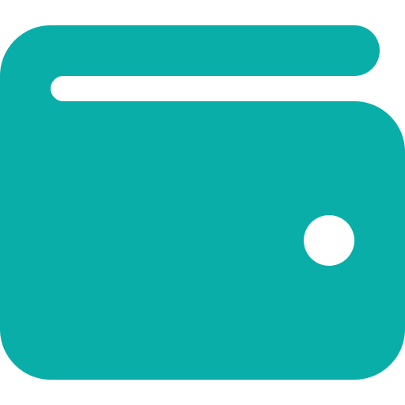
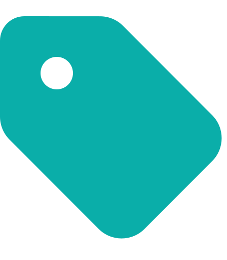
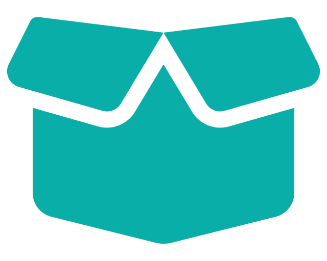
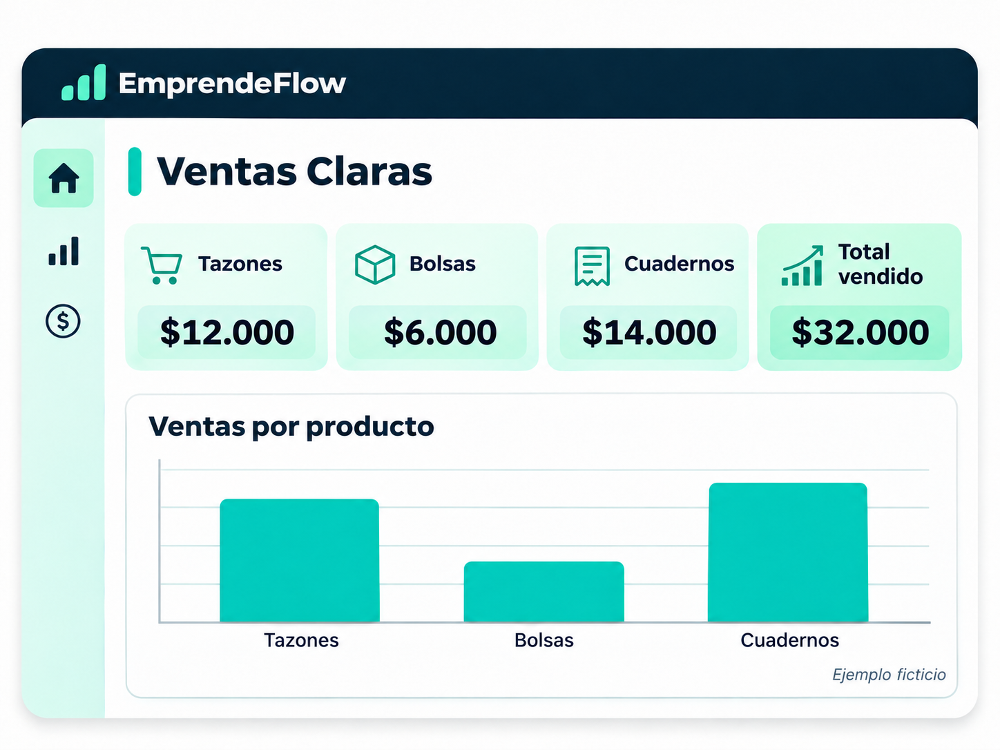
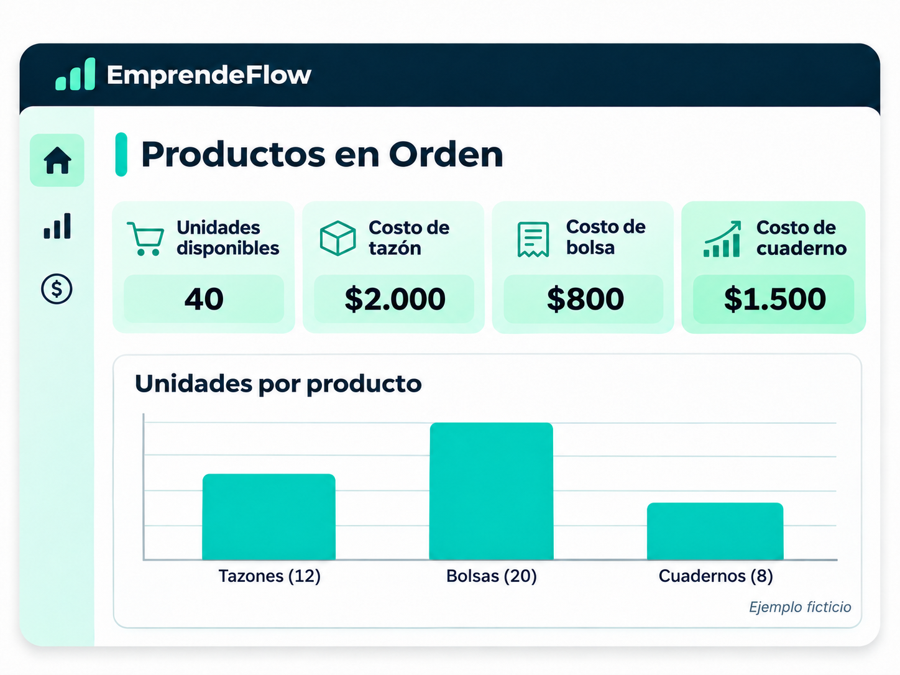

Cuentas en un solo lugar
La propuesta reúne ventas, gastos, costos y productos. Así podrás relacionar los datos sin llevar una lista distinta para cada tarea.
CONOCE EMPRENDEFLOW
EmprendeFlow está pensado para llevar las cuentas de pequeños negocios. La propuesta reúne ventas, gastos, costos y productos para que puedas revisar tus números con más orden.
Aquí puedes conocer las funciones que queremos desarrollar para llevar las cuentas de un negocio con más orden.
Conocer las funciones
NUESTRO ENFOQUE
La propuesta reúne ventas, gastos, costos y productos. Así podrás relacionar los datos sin llevar una lista distinta para cada tarea.
Los resúmenes separan lo que vendes, lo que cuestan los productos y los demás gastos. Cada cifra tiene un nombre claro.
La idea es empezar con registros sencillos y después revisar los resultados. No hace falta ser experto en números para entender la propuesta.
TODO MÁS ORDENADO
Estas son las funciones que queremos incluir en EmprendeFlow para que lleves un mejor control de tu emprendimiento.
Registra cada venta, el producto y el dinero que recibiste.

Anota pagos de arriendo, luz, transporte, envíos y otros gastos.

Revisa cuánto gastas al comprar o hacer cada producto antes de venderlo.
Calcula cuánto podría quedarte después de descontar los costos y los gastos anotados.

Lleva la cuenta de lo que tienes para vender y lo que necesitas reponer.
Compara tus resultados de distintos días o meses y mira cómo va tu negocio.
CONOCE CÓMO FUNCIONARÍA
Esa es una de las funciones propuestas. Cada venta guardaría una fecha, el producto y el monto. Así se podrían consultar las ventas de un día o de un mes sin buscar entre varios registros.
El costo indica cuánto se gastó en comprar o preparar los productos que se vendieron. Los otros gastos son pagos del negocio, como arriendo o transporte. Separarlos ayuda a entender qué se está descontando de las ventas.
La propuesta parte con pasos cortos: anotar una venta o un gasto, revisar los productos y consultar el resumen. Las pantallas usarían palabras conocidas y mostrarían los datos principales con orden.
IDEAS PARA LAS CUENTAS DEL NEGOCIO
Estos son ejemplos ficticios de herramientas relacionadas con EmprendeFlow. Los plazos y presupuestos de desarrollo son inventados para este proyecto escolar. Los montos están en pesos chilenos.

Un registro de ventas para un puesto de feria que necesita saber cuánto vendió cada día.
Tiempo de entrega: 3 semanas
Presupuesto aproximado: $220.000 CLP
El ejemplo guardaría la fecha, el producto, la cantidad y el precio de cada venta. También permitiría distinguir los pagos en efectivo y por transferencia.

Un registro de pagos para un pequeño local que quiere revisar en qué usa su dinero.
Tiempo de entrega: 2 semanas
Presupuesto aproximado: $180.000 CLP
El ejemplo agruparía los gastos por tipo y por mes. Cada pago tendría una fecha, un motivo y un monto para poder encontrarlo y revisar el total.

Un control de productos para una tienda que necesita saber cuántas unidades tiene y cuánto cuesta cada una.
Tiempo de entrega: 3 semanas
Presupuesto aproximado: $240.000 CLP
El ejemplo registraría las unidades que entran y salen. Mostraría el costo de cada producto por separado de su precio de venta, para evitar confundir ambos valores.

Un resumen para un negocio que quiere comparar sus ventas con sus costos y otros gastos.
Tiempo de entrega: 4 semanas
Presupuesto aproximado: $320.000 CLP
El ejemplo restaría a las ventas el costo de los productos vendidos y los demás gastos registrados. El resultado sería una ganancia estimada, que depende de anotar todos los datos.
UN EJEMPLO MUY FÁCIL
Paula vende pasteles desde su casa. Anota las ventas en un cuaderno y los ingredientes en su celular. Cuando termina el mes, no sabe con claridad cuánto ganó.
Paula podría registrar lo que vendió, el costo de los ingredientes y sus demás gastos. Después vería un resumen para entender cuánto dinero podría haber ganado.
Ventas$100.000
Ingredientes$40.000
Otros gastos$20.000
Ganancia estimada$40.000
En este ejemplo: $100.000 de ventas menos $40.000 en ingredientes y $20.000 en otros gastos dejan $40.000 de ganancia estimada.
Los montos son inventados. El resultado real depende de que se registren todos los costos y gastos.
FÁCIL DE USAR
Queremos que la información sea clara, incluso si nunca has usado un programa para llevar tus cuentas.
Estamos desarrollando EmprendeFlow. Por ahora puedes conocer sus funciones y la idea que queremos construir
Me interesa EmprendeFlow

 Tiempo de entrega: 3 semanas
Tiempo de entrega: 3 semanas